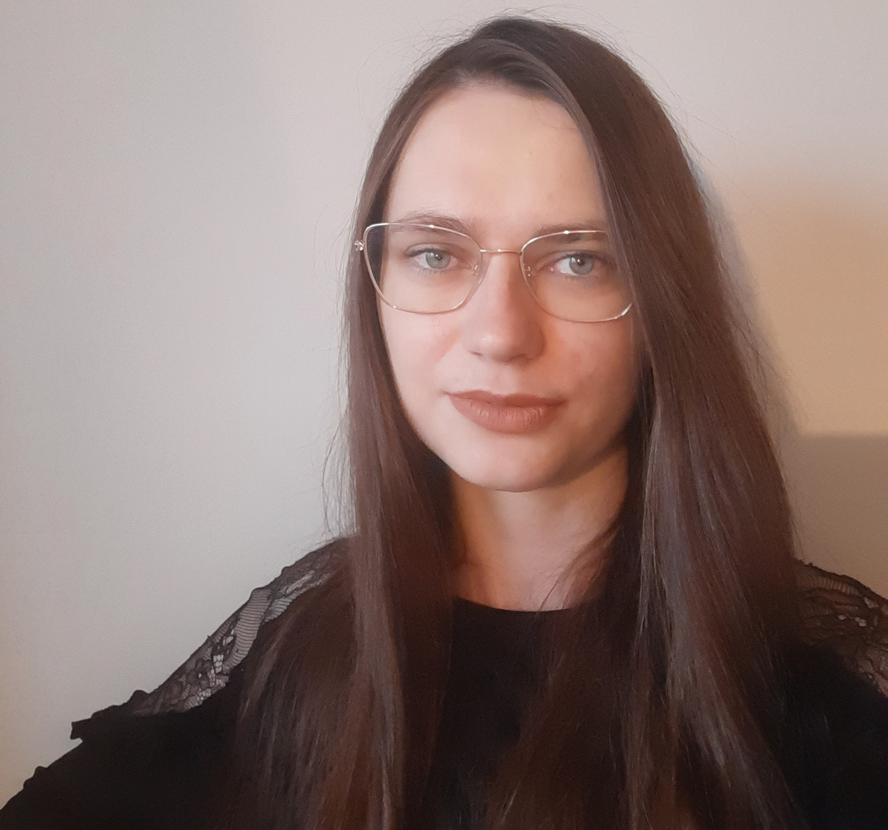

Natalia Kaczyńska

Summary
I am a chemist who learn programming and I would like to expand in these two branches together.
Education
Bachelor of Chemistry - Cardinal Stefan Wyszyński University (October 2018 - July 2021)
Work Experience
-
Student practices in analytical laboratory - Research Network "Łukasiewicz" - Industrail Automotive Institute
August 2020
- Researches of gas oil and petrol.
- Fuel distilation.
- Prosecution of clerical activities.
- Preparation and presentation of the presentation about rules of mesurements executing.
-
Specialist - Central Laboratory of Radiochemical Protection
December 2022 - now
- Executing of radiochemical method mesurments:
- radioactive isotopes Pu-238, 239+240 concentrations mesurments in food and drink products, rivers, lakes
and the Baltic Sea bottom sediments
- radioactive isotops U-238, 234, 235 concentrations in water and urine samples.
- Calibration of measuring device.
- Weighing Marinelli containers for executing of gamma radioactive concentrations measurments of spectrometric method in
food and drink products samples.
- Complementing reports from conducted researches.
Skills
- Fundamentals of C++
- Primary laboratory equpiment service.
- Service of alpha spectrometr.
- Service of MS Office.
- Driving licence category B.
Languages
Courses and Certifications
Programming course "Future Developer"
September 2023 - now
Other